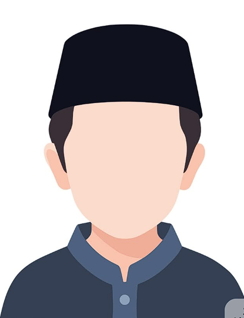
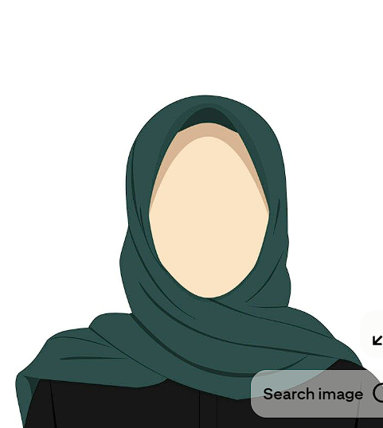

Mutawif
HHP LAND ARRANGEMENT
LAYANAN KAMI.
Perjalanan yang lebih terarah.
Dari kebutuhan akomodasi hingga pendampingan ibadah, mari susun layanan sesuai rencana perjalanan Anda.
01 / AKOMODASI
Hotel bernusuk
Diskusikan kebutuhan hotel untuk jamaah, keluarga, maupun rombongan travel di Makkah dan Madinah.
- Perencanaan lokasi hotel, tanggal menginap, dan kebutuhan kamar.
- Koordinasi pilihan akomodasi serta kebutuhan rombongan.
- Konfirmasi status hotel bernusuk, fasilitas, dan ketersediaan saat konsultasi.
Pilihan hotel dan status terkait Nusuk harus diverifikasi dalam penawaran; halaman ini bukan daftar hotel terverifikasi.
02 / KEDATANGAN & KEPULANGAN
Handling bandara
Koordinasi kebutuhan jamaah di bandara agar tahapan kedatangan dan kepulangan lebih terencana.
- Koordinasi jadwal penerbangan dan titik pertemuan.
- Pengaturan penyambutan serta arahan keberangkatan berikutnya.
- Koordinasi kebutuhan rombongan dan barang bawaan sesuai kesepakatan.
03 / DOKUMEN PERJALANAN
Layanan visa
Konsultasikan kebutuhan visa dan persiapan dokumen sesuai tujuan serta jadwal perjalanan Anda.
- Informasi persyaratan dokumen sesuai jenis visa.
- Koordinasi kelengkapan dokumen dan proses pengajuan.
- Pembahasan waktu proses, biaya, serta ketentuan yang berlaku.
Penerbitan visa merupakan kewenangan otoritas terkait. Tidak ada jaminan persetujuan atau waktu penerbitan.
04 / PENDAMPING PERJALANAN IBADAH
Mutawif dan Mutawifah
Pemandu yang mendampingi jamaah selama perjalanan ibadah. Kebutuhan pendampingan dan ketersediaan pemandu dibahas saat konsultasi.

Mutawifah
khalid

Mutawif
nur

Mutawifah
mita
Mari susun perjalanan Anda.
Sampaikan layanan yang dibutuhkan pada catatan konsultasi. Rincian cakupan dan biaya dikonfirmasi dalam penawaran.
KONSULTASIKAN KEBUTUHAN →